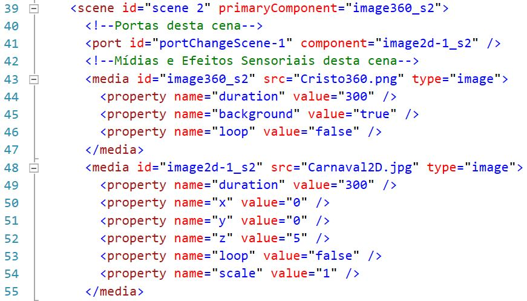

Tutorial - Portas em um projeto MultiSel
As Portas são responsáveis por disponibilizar uma porta/interface de interação ou entrada entre objetos ou cena
A imagem a baixo mostra um exemplo de uma cena com este conteúdo.

Portas
A imagem a baixo mostra na linha 41, um exemplo porta.
As portas no AMUSE VR têm como objetivo, prover acesso a ações que levem de uma cena a outra.
No AMUSE VR, todo relacionamento externo à cena, necessita de uma porta para prover acesso ao conteúdo da cena.
Todas as portas devem ser criadas internamente as cenas que forneçam acesso a uma de suas mídias.
Para criar uma porta é necessário criar a tag port, com um atributo id único e o atributo component, que representa a mídia alvo da porta.
Atenção
Ao criar um comando interativo de clique em alguma mídia, é necessário, criar uma porta na cena que contenha a mídia originária a mesma mídia que terá a ação responsiva, além disso, é necessário criar um relacionamento externo às cenas, como visto anteriormente.